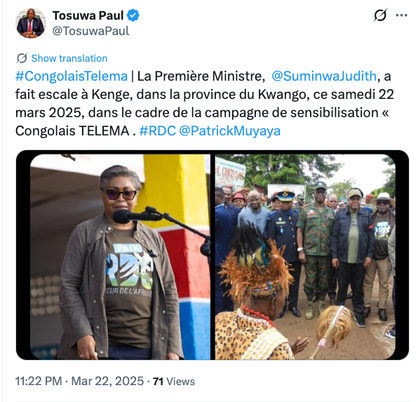
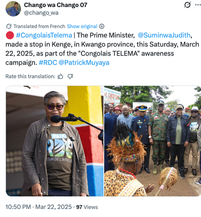

Rwanda In Uganda
@RwandaInUganda
The so-called First Lady of DRC visiting FDLR genocidal fighters at Kokolo hospital. This is who @UN and @EUCouncil are protecting. #TshisekediIsKilling

A Thraets Investigation
How Rwanda, M23, and Kinshasa weaponised information infrastructure to shape the battlefield.
The Opening
On 25 January 2025, Denise Nyakeru Tshisekedi, First Lady of the Democratic Republic of Congo, walked the wards of Camp Kokolo and Tshatshi Military Hospital in Kinshasa. The men in the beds had been wounded during the M23 offensive that had occurred the previous week, in which rebel forces captured Goma, the largest city in eastern Congo. Her visit was documented and circulated by Congolese state media: a nation’s first lady at the bedside of its soldiers.

On X, a different version of that same visit was also in circulation.
Across dozens of accounts, a coordinated wave of posts claimed that the men Denise Nyakeru had visited were not Congolese soldiers at all, but fighters from the FDLR, the armed group founded by perpetrators of the 1994 genocide against the Tutsi in Rwanda. The visit, they argued, was proof that the Congolese government and a sanctioned genocidal militia were one and the same force.


That wave of posts was not addressed to Congolese citizens. It was addressed, in English, to @UN and @EUCouncil: the specific institutions with the power to sanction, to condemn, to legitimise or delegitimise. To understand how that battle was being waged, the Thraets Investigations Team analysed over 2,000 posts across twelve hashtags on X between January and March 2025, covering the fall of Goma, the fall of Bukavu, and the diplomatic scramble that followed.
What we found were three distinct campaigns operating in the same information space simultaneously, each with a different author, a different target, and a different theory of how narratives win wars. Together they raise harder questions than who was posting what: questions about who decides what is worth condemning, who holds the power to dictate consequences, and why the most sophisticated narrative operations in an African war were aimed not at African publics but at offices in New York and Brussels.

When sanctions follow a conflict, they create a named class of losers with strong incentives to fight back. What follows is an account of how some of them did.
The Longest Shadow
In 1994, an estimated 800,000 people, the majority of them Tutsi, were killed in Rwanda in one of the fastest acts of mass murder in recorded history. When the genocide ended, it displaced. The Hutu militias responsible fled across the border into what was then Zaire, settling in the east, in the forests of the Kivus, keeping their weapons. Among the groups that emerged from those camps was the FDLR: an armed movement rooted in the same ideology that drove the genocide, operating on Congolese soil, thirty kilometres from the Rwandan border.

For Kigali, that proximity has never stopped being a live security concern. It is the foundation on which Rwanda’s posture toward eastern Congo has been built for three decades.
Eastern Congo never stabilised after 1994. It became the site of two regional wars, drawing in Rwanda, Uganda, and a web of armed groups with overlapping interests in the area’s exceptional mineral wealth: gold, coltan, cassiterite, tungsten, the raw materials of the global electronics industry. Those wars ended without resolving anything. What followed was not peace but a permanent low-intensity conflict, punctuated by ceasefires, agreements, and collapse.
M23, the March 23 Movement, is the latest iteration of that cycle. Led primarily by Congolese Tutsi commanders, it first emerged in 2012, briefly captured Goma, went dormant, re-emerged in 2021, and has been advancing ever since.
The question of Rwanda’s relationship to M23 sits at the centre of every diplomatic confrontation over this conflict. The United Nations Group of Experts, the United States, the European Union, and Human Rights Watch have all presented evidence of direct Rwandan military support for M23, including troop deployments, weapons supply, and command coordination. In February 2025, when CNN’s Larry Madowo asked President Kagame directly whether Rwandan troops were inside the DRC, Kagame replied: “I don’t know.” He is the commander-in-chief of the Rwandan Defence Force.
Rwanda has formally and consistently denied backing M23. Its position is that the FDLR remains an existential threat on its border, and that the Congolese government’s documented collaboration with FDLR units justifies its posture. These are not invented claims. The dispute is not about whether those grievances are real, but about what they justify.
By January 2025, that dispute had reached a breaking point, and the institutions that hold the power to name aggressors, freeze assets, and designate individuals as threats to international peace were about to act. Coming into that moment, the positions were clear. The DRC government wanted the world to see a straightforward case of foreign aggression: a sovereign state invaded by its neighbour, entitled to international protection and redress. Rwanda wanted the world to see a security dilemma: a country taking necessary defensive action against a genocidal militia the international community had failed to neutralise for thirty years. M23, operating under the political umbrella of the Alliance Fleuve Congo, wanted recognition, not as a Rwandan proxy, but as an indigenous Congolese movement with legitimate grievances, fighting for communities the Congolese state had long abandoned.
Evidence
The so-called First Lady of DRC visiting FDLR genocidal fighters at Kokolo hospital. This is who @UN and @EUCouncil are protecting. #TshisekediIsKilling
@UN @EUCouncil the FDLR are not soldiers of FARDC. They are genocidal militias. Why is the world silent while Tshisekedi uses them against his own people?
@UN @EUCouncil Do you support genocide? Because Tshisekedi’s government is fighting alongside FDLR genocidaires. Sanction Kinshasa now! #TshisekediIsKilling #CongolaisTelema
@EUCouncil Tshisekedi uses state jets to genocide Banyamulenge. 10 posts in 11 seconds. You decide if that’s organic.
Kagame sent disguised troops to kill Tutsi families in Rwanda 1990-94 and now does same in DRC. #rubavu #gisenyi #KagameIsKilling #RDFNefativeForce
Selected posts from the dataset, each revealing a different operation’s signature.
Three Operations
To understand how that battle was being waged, the Thraets Investigations Team analysed over 2,000 posts across twelve hashtags on X between January and March 2025, covering the fall of Goma, the fall of Bukavu, and the diplomatic scramble that followed. What we found were three distinct campaigns operating in the same information space simultaneously.
This campaign’s stated target, in 181 of 612 posts, was @UN and @EUCouncil, tagged as opening tokens. The operation was designed not for mass persuasion, but to place one argument inside a specific institutional conversation: that the DRC government, not Rwanda, was the aggressor, and that the entity deserving sanction was Kinshasa. It ran this argument at the moments those institutions were deciding. The rest of the time, it was largely silent.
The DRC president is recast from the leader of an invaded state into the financier of a genocidal militia. This mirrors Kigali’s standing justification for its military presence in eastern Congo.
FARDC airstrikes on the M23-aligned Twirwaneho-held Minembwe airfield are reframed as the aerial extermination of Banyamulenge and Tutsi civilians, inverting the accusation most damaging to Kigali.
International sanctions are framed as rewarding the victim narrative of an aggressor; the Luanda process as stalled by Kinshasa’s refusal to dismantle the FDLR.
Content distributed at machine speed.
Multiple accounts published their entire quarterly output in windows of seconds to minutes, in several cases with posts sharing the same timestamp to the second. The pattern is consistent with operators pasting from a prepared list against the posting interface, not composing independently.
For scale, a human pacing themselves could be expected to post roughly once every 90 seconds, meaning TuyisengeD22748’s output alone would take roughly four and a half hours.
Master list left visible in published posts.
Two accounts published posts that still carried the line numbers of the source document the text was copied from. The numbers were not deliberate, they are artefacts of an operator who copied a line and forgot to delete its position marker. They constitute direct evidence of centralised content production distributed to posting accounts.
1. Tshisekedi’s government has been bombing Minembwe since Monday, targeting Banyamulenge civilians and destroying vital infrastructure. This is a clear attempt at genocide, and the world stays silent.
45. @UN @EUCouncil Tshisekedi has vowed to exterminate the Banyamulenge & is using state fighter jets to do it. What do you call a government that bombs its own civilians? A genocidal regime! Stop this horror!
A list running to at least 45 entries implies a content volume substantially larger than what this collection captured, and additional accounts posting from the same script outside the dataset.
The network posted in four discrete waves, each timed to an open institutional decision window.
The network posted in four discrete waves, each timed to an open institutional decision window. Drag the slider through the quarter to trace each spike against the event that triggered it.
Account @RwandaN41033494, display name “African Truth Teller From Rwanda”, declared location Nyagatare, Rwanda, was running a one-person sustained effort to ensure that any search for regional news about Rubavu, Gisenyi, Goma, or Rwanda returned anti-Kagame content. Its bio advanced a “double genocide” narrative associated with the Rwandan opposition diaspora. Its target was a search surface: the organic information environment anyone encounters when looking up the conflict.
The account’s bio claimed Kagame sent disguised troops to kill Tutsi families in Rwanda between 1990 and 1994, then presented himself as their saviour.
Rather than producing original content, the account curated: VOA Afrique, TV5 Monde, Radio Itahuka, Radio Inkingi, framing each link with its fixed hashtag block to maximise search surface contamination.
Neutral geographic terms weaponised as search vectors.
Every post carried an identical 13-hashtag block mixing neutral place names with attack hashtags. Appeared in 109 of 152 posts.
One account outperforms a 90-account network.
@RwandaN41033494 achieved a median of 200 views per post across 152 posts. The entire 90-account covert network achieved a median of 14. A single committed individual, posting at human pace over 21 days, reached more people per post than a coordinated operation with machine-speed burst capability. The difference is asset quality: the flooder’s content was findable and readable; the network’s content was invisible to anyone not already searching its specific hashtags.
For scale: “State camp.”, a one-word observation in a single post, drew 153 views.
CongolaisTelema, Lingala for “Congolese, stand up”, was the DRC government’s domestic mobilisation response to the M23 offensive. Fronted by Communications Minister Patrick Muyaya and carried on national broadcaster RTNC, it was designed to hold together a national public narrative of unity and resistance under military pressure. It operated openly, at scale, with verified accounts and institutional reach the covert network could never approach. That reach was also its liability.
The campaign’s primary register was patriotic mobilisation: the army needs soldiers, the country needs solidarity, the province tours by PM Judith Suminwa demonstrate a functioning state.
A “Front Culturel” of musicians and slam poets gave the campaign a civilian face beyond official government communications.
State text published as personal content by journalist accounts.
Identical texts, a government communique on M23 violations, coverage of the PM’s stop in Kenge, a senators’ Eid message, appeared word for word across nominally independent journalist and influencer accounts. This is centrally distributed text presented as personal editorial judgement. It sits on the border between press release journalism and coordinated inauthentic behaviour.


Reach made the campaign worth hijacking.
The covert network placed 190 posts carrying #CongolaisTelema alongside #TshisekediIsKilling, inserting genocide accusations into the search results of the DRC government’s own hashtag. The campaign’s 1.5 million views in its peak week was precisely what made it a target: a hashtag nobody searches is not worth hijacking. Struggles_23, the covert network’s most persistent account, continued this until March 30, the final day of the dataset.
For scale: state posts inside #CongolaisTelema reached 1.5M views in their peak week; the infiltrating network posts peaked near zero. Struggles_23 posted inside #CongolaisTelema until March 30, two weeks after the EU’s March 17 designations.
An EU Council staffer or a UN analyst searching for information on the conflict during the week of the EU sanctions vote would have encountered a mixed search surface. These screenshots were taken using advanced search filters restricting results to posts published between January 1 and March 31, 2025 — the same quarter the three operations were active. Each uses a keyword associated with one of the three actors. None of the top results shown are posts from the covert network. What they show instead is the broader information environment those operations were designed to enter, contest, and shape.
By the standard metrics used to evaluate influence operations — reach, engagement, amplification — the covert network failed comprehensively. It produced 30 percent of the dataset’s content and captured 2.1 percent of its views. The anti-Kagame flooder, a single account, outperformed it on every per-post measure. The state campaign outperformed it by an order of magnitude.
The covert network produced 30% of all content in the dataset and captured 2.1% of its views.
Those numbers, read in isolation, produce the wrong conclusion. The covert network was not optimised for reach. It was optimised for placement at decision points.
The operation placed 181 posts in the mention feeds of @UN and @EUCouncil during the weeks those institutions were deciding on sanctions. Whether any of those posts was read, screenshotted, or cited cannot be established from platform data. What can be established is that the attempt was made, that it was timed with precision to institutional decision windows, and that it cost approximately nothing to run.
What It Means
Propaganda, in its classical form, is a mass exercise. Saturate enough minds, shift the mood of a population, and you shift what governments feel they can do. The megaphone is its instrument. The crowd was its target.
“The prevailing instinct, when confronted with influence operations, is to reach for the label of misinformation: to find the lie and correct it. That instinct fails here, because there is no clean lie to correct.”
What this investigation documents is not simply a disinformation campaign. It is a campaign that understood, with some precision, that the battlefield for this conflict had shifted. Not to African television networks or newspaper front pages, but to a digital space with almost no equivalent rules, gatekeepers, or friction, one where a numbered list, a few dozen disposable accounts, and knowledge of when the relevant institution meets is sufficient infrastructure for an operation aimed at the Security Council.
That shift matters because the old instincts for countering narrative manipulation were built for a different terrain. When the battleground was media, the intervention point was the editor, the fact-checker, the broadcaster’s standards desk. In the environment this operation exploited, none of those friction points exist. Content moves directly from operator to institutional mention tab, at machine speed, at the precise moment it is most likely to matter. Which is precisely what makes this class of operation so difficult to counter using the tools the FIMI field currently reaches for.
In June 2025, three months after the quarter this investigation covers, the United States brokered a peace agreement between the DRC and Rwanda, the Washington Accords, ratified by Tshisekedi and Kagame in December. The deal called for Rwandan troop withdrawal, DRC action against the FDLR, and the establishment of a joint minerals framework opening eastern Congo’s resources to US and Rwandan economic interests. As of mid-2026, Rwandan troops remain in the DRC, the FDLR has not been disbanded, and fighting continues. The deal has been criticised as one that addresses the interests of its brokers more directly than the causes of the conflict.
“What this investigation documented (a network pushing the narrative that the FDLR was the real problem, that Rwanda’s posture was defensive, that Tshisekedi was the obstacle to peace) did not, on the evidence available, cause that outcome. But the frame those operations were working to install in New York and Brussels in March 2025 is recognisably present in the architecture of the agreement that followed.”
The UN documents FARDC cooperation with FDLR elements. Anti-Tutsi violence in the DRC is real. The FARDC did bomb Minembwe, and Banyamulenge civilians do live there. The network’s work was not fabrication. It was re-voicing: taking documented facts, stripping their context, removing attribution, and reassembling them into a picture that served a particular conclusion. The Minembwe airfield was a military target held by an M23-aligned armed group. That one fact, removed, turns an airstrike into a genocide. The operation did not invent the strike. It erased the context around it and re-addressed the remainder to the UN and EU as the testimony of ordinary citizens.
This is what the FIMI framework was developed to capture and what the misinformation framing misses. The problem is not always false information. It is true information, selectively assembled, stripped of attribution, and re-voiced through personas designed to appear as the spontaneous testimony of civilians. The effective counter is not a fact-check. It is context restoration, which is slower, harder, and requires exactly the kind of ground-level knowledge of a conflict that the Great Lakes region’s monitoring infrastructure currently cannot provide.
“That gap is the operational environment this network exploited. It ran during a war that displaced hundreds of thousands of people, on a platform whose trust and safety presence in the region is minimal, in an information environment where the journalists who would normally supply ground truth were being detained by the armed group whose narrative the operation amplified. The asymmetry between the sophistication of the manipulation and the capacity of the defence is not incidental to this story. It is the story.”